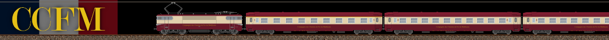
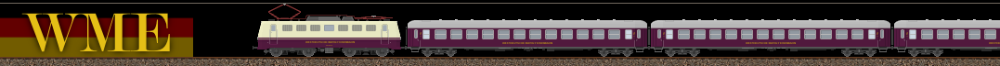
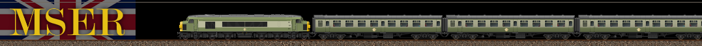
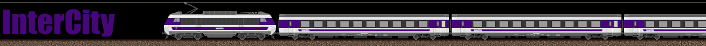
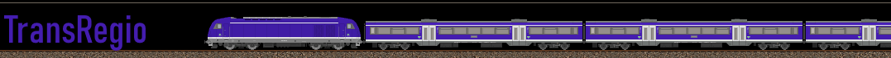
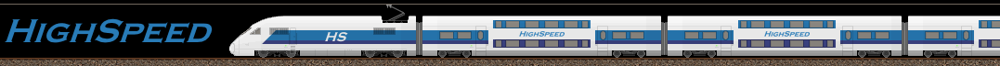
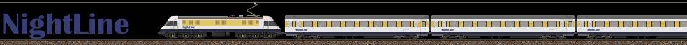

Les origines
Des premiers projets d'unification ferroviaire à la fondation de la MLTC Railways en 2001.
Les prémices de la MLTC
Malgré l'ambition portée dès les débuts du Mathlyens de construire un réseau de transport intégré et cohérent à l'échelle continentale, la réalité politique et logistique s'est avérée bien plus complexe que prévu. Des plans sont formulés dès 1955 pour créer une infrastructure de transport commune, mais rapidement, le projet d'unification complète est freiné par des coûts trop élevés et des intérêts divergents entre États membres.
Toutefois, l'ambition d'unifier les réseaux ferroviaires des pays membres demeure. Trois projets sont alors rapidement étudiés pour donner corps à cette ambition :
Le premier projet, le plus ambitieux, propose la création d'une compagnie ferroviaire unique pour l'ensemble du Mathlyens. Ce projet est toutefois rapidement abandonné, en raison de difficultés de mise en œuvre majeures, tant techniques que politiques, et d'un coût jugé trop élevé pour les jeunes institutions de l'union.
Le deuxième projet envisagé repose sur la création d'une coentreprise regroupant les compagnies nationales des chemins de fer de France, du Royaume-Uni, de l'Allemagne de l'Ouest, de la Belgique, du Luxembourg, des Pays-Bas et de l'Italie. Toutefois, cette idée est rapidement abandonnée, car trop proche dans sa conception du projet Trans-Europ-Express (TEE), alors en cours de développement à l'échelle européenne.
Un troisième projet voit alors le jour, plus structurant à long terme. Il consiste à fonder trois compagnies ferroviaires interrégionales, pensées dès leur conception pour dépasser les frontières nationales et favoriser une coopération transfrontalière renforcée, en conservant néanmoins une implantation géographique forte, tout en participant à la structuration progressive d’un réseau ferroviaire à l’échelle du Mathylens.
C'est finalement ce dernier modèle hybride, conciliant intégration européenne et ancrage territorial, qui apparaît ainsi comme le plus viable et le mieux adapté aux contraintes politiques, économiques et opérationnelles de l’époque. Ainsi, trois compagnies sont créées :

Fondée en 1958, la CCFM est la première compagnie ferroviaire créée par l'autorité du Mathlyens. Initialement destinée à la France seule, il est finalement décidé que son périmètre s'étende également à l'ensemble du Benelux. Ainsi, elle opère sous le nom CCFM en France et en Wallonie, MSVM aux Pays-Bas et en Flandre, et GEVM au Luxembourg.

WME
Westdeutsche Mathly Eisenbahn
Fondée en 1958 peu après la CCFM, la WME est basée en République fédérale d'Allemagne et a pour mission de desservir l'Allemagne de l'Ouest ainsi que les zones frontalières germanophones. Son parc matériel est largement issu de celui de la Deutsche Bundesbahn. Elle assure notamment les liaisons entre les grandes villes ouest-allemandes et les connexions vers le Benelux et la France, en coordination avec la CCFM.

MSER
Mathly Southern England Railways
Fondée en 1958, la MSER se substitue à la British Rail dans le sud de l'Angleterre et reprend une partie de son parc roulant. En plus de ses dessertes ferroviaires classiques, elle est chargée de l'exploitation des liaisons par ferrys-ferroviaires entre la France et l'Angleterre, assurant ainsi le lien physique entre le continent et les îles britanniques avant la construction du tunnel sous la Manche.
Chacune de ces compagnies adopte une gouvernance semi-publique, reposant sur un financement mixte États-Mathlyens, et opèrent en parallèle des opérateurs nationaux. Peu à peu, ces compagnies mathlyéennes deviennent les concessionnaires attitrés de portions entières du réseau, notamment sur les axes transfrontaliers ou d'intérêt stratégique.
L'Italie, pourtant membre fondateur du Mathlyens, reste en marge de ce dispositif. Le plan de transport initial prévoyait la création d'une quatrième compagnie, les Ferrovie Italiane di Mathlyan (FIM), qui aurait repris une grande partie des activités des chemins de fer italiens. Mais le projet se heurte à une forte opposition politique interne : le gouvernement italien, soucieux de préserver la souveraineté de son réseau ferroviaire national, refuse de céder le contrôle d'une partie de ses infrastructures à une autorité supranationale. Le projet FIM est donc abandonné, et l'Italie se contente d'accords ponctuels avec la CCFM et la WME. Il faut attendre 2003 avec l'extension progressive du réseau MLTC pour voir les premiers trains de l'union dépasser les gares de Gênes et de Milan (desservies jusque là ponctuellement par quelques trains internationaux de la CCFM et de la WME respectivement).
Bien que limitées dans leur rayonnement initial, les trois compagnies fondatrices posent les bases d'une future intégration ferroviaire du continent et constituent les précurseurs directs de la MLTC Railways, fondée plusieurs décennies plus tard.
Une unification tardive
Des décennies d'immobilisme
Durant les décennies qui suivent la création des trois compagnies, plusieurs initiatives pour les rapprocher voient le jour de manière fragmentaire, mais aucune n'aboutit véritablement.
Dans les années 1970, un projet de mutualisation du matériel roulant entre la CCFM et la WME est étudié, mais il ne dépasse pas le stade des discussions préliminaires. En 1984, un accord-cadre prévoyant une coordination renforcée des horaires et des tarifs est signé par les trois compagnies, mais il reste largement lettre morte, faute de volonté politique suffisante.
Le projet d'unification est peu à peu relégué au second plan dans l'agenda des institutions du Mathlyens.
Le tournant des années 1990 et la création du groupe MLTC
Au début des années 1990, deux événements majeurs bousculent le statu quo et replacent l'unification ferroviaire au centre des débats :
Réunification allemande
La chute du mur de Berlin et la réunification de l'Allemagne obligent la WME à absorber dans l'urgence une partie du réseau est-allemand. Ce défi logistique met en lumière les limites d'une compagnie isolée et renforce l'argument en faveur d'une structure unifiée, plus résiliente.
Tunnel sous la Manche
L'ouverture du tunnel sous la Manche transforme en profondeur le rôle de la MSER. Ses liaisons par ferrys-ferroviaires, qui constituaient sa raison d'être, deviennent obsolètes. La compagnie se repositionne sur les liaisons transmanche directes, mais cette mutation souligne la nécessité d'une coordination à l'échelle du Mathlyens.
C'est dans ce contexte qu'un projet de groupe multimodal prend forme. En 1999, le groupe MLTC voit officiellement le jour avec la fondation de sa première filiale opérationnelle, Mathly Alliance Airlines, dédiée au transport aérien.
Deux ans plus tard, en 2001, la branche ferroviaire du groupe, MLTC Railways, est fondée à l'issue de la fusion de la CCFM, de la WME et de la MSER. Les négociations, qui durent près de trois ans, achoppent notamment sur le choix du siège social, finalement établi à Bruxelles en terrain neutre, et sur les craintes de perte d'identité régionale exprimées par les cheminots des trois compagnies.
La MLCC (Mathly Cargo Company) est créée dans la foulée et reprend l'ensemble des activités de fret ferroviaire précédemment assurées par les anciennes compagnies.
Harmonisation
La fusion s'accompagne d'un vaste chantier d'harmonisation : unification progressive des livrées sous les couleurs MLTC, mise en place d'un système de billetterie commun, et refonte complète des grilles tarifaires. L'offre commerciale est restructurée autour de quatre services, reprenant et consolidant les différentes marques héritées des compagnies fondatrices :

InterCity IC
Service phare de grandes lignes, l'InterCity regroupe les principales liaisons nationales et transfrontalières. Circulant généralement à des vitesses de 160 à 200 km/h sur voie classique, il assure la connexion rapide entre les grandes villes du Mathlyens avec un haut niveau de confort. Le parc est composé de voitures tractées et d'automotrices héritées des trois compagnies, progressivement unifiées sous la livrée MLTC.

TransRegio TR
Service régional assurant le maillage fin du territoire, le TransRegio dessert les villes moyennes, bourgs et zones rurales avec des arrêts fréquents et des correspondances optimisées vers les lignes InterCity et HighSpeed. Il reprend les anciens services régionaux des compagnies fondatrices et constitue l'épine dorsale de la desserte de proximité dans les pays membres historiques.

HighSpeed HS
Le service à grande vitesse de la MLTC, circulant à 300 km/h et plus sur les lignes dédiées. Il est né de la fusion des services Blitz (WME) et Turbo (CCFM), et reprend également les liaisons rapides de la MSER vers le continent. Le HighSpeed relie les capitales et métropoles majeures, avec un positionnement premium orienté vers la clientèle affaires et les longs trajets internationaux.

NightLine NL
Trains de nuit reliant les capitales et grandes villes sur des distances longues, le NightLine propose plusieurs gammes de confort : sièges inclinables, couchettes et cabines privatives. Il assure des liaisons nocturnes à travers tout le Mathlyens, offrant une alternative au transport aérien pour les trajets de nuit entre pays membres.
En l'espace de quelques années, la MLTC Railways s'impose ainsi comme l'opérateur ferroviaire de référence du Mathlyens, posant les fondations d'un réseau appelé à s'étendre bien au-delà de ses six pays fondateurs. L'évolution ultérieure de ces services, avec la refonte de 2012, est détaillée dans le chapitre dédié.
Dernière mise à jour : 6 avril 2026